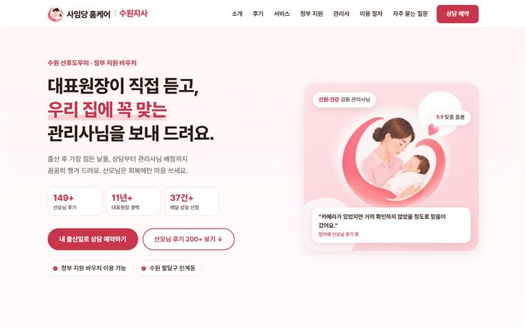
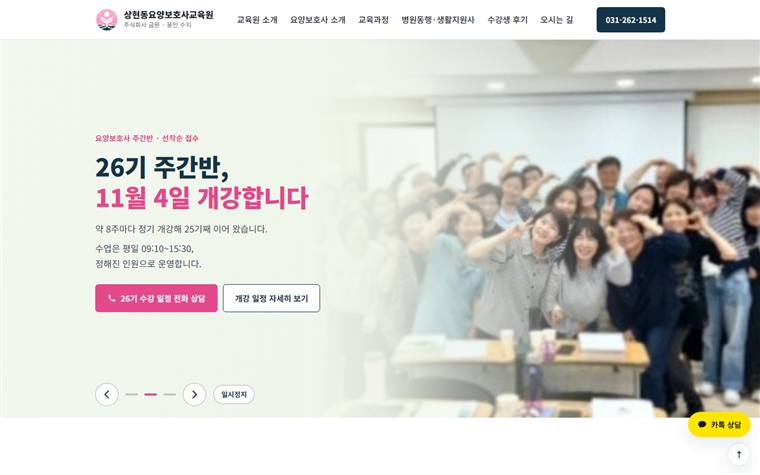

손님이 믿고 연락하는,
원장님 홈페이지.
원장님 인터뷰로 경력과 강점을 찾아, 첫 화면부터 ‘이 원장님이라면’ 하고 믿게 만드는 홈페이지를 만듭니다. 홈페이지만 맡기셔도 됩니다. 지금 보고 계신 이 홈페이지도 로컬핀 마케팅이 직접 만들었습니다.
손님은 플레이스에서 고르고,
홈페이지에서 확신합니다.
지역 손님은 두세 곳을 비교한 뒤, 마지막으로 “여기 제대로 된 곳인가?”를 확인합니다. 그때 홈페이지가 있느냐 없느냐가 결정을 바꿉니다.
- 1네이버에서 검색플레이스·블로그를 보고 후보를 두세 곳으로 좁힙니다.
- 2업체 이름으로 다시 검색“여기 믿어도 되나?” 한 번 더 찾아봅니다.
- 3홈페이지에서 확인하고 신청원장 소개, 가격, 이용 순서를 보고 마음을 정합니다. 홈페이지가 없으면 여기서 멈춥니다.
홈페이지가 없을 때, 손님 속마음
- “작은 곳인가? 금방 없어지면 어쩌지”
- “가격이랑 절차를 모르겠네, 전화하기 부담된다”
- “다른 데도 한번 더 볼까”
원장님 홈페이지가 있을 때
- “제대로 운영하는 곳이구나”
- “원장님 경력 보니 믿고 맡겨도 되겠다”
- “가격·절차가 다 나와 있네, 바로 신청하자”
동네에서는 홈페이지 하나가 ‘믿을 만한 곳’의 기준이 됩니다.
같은 동네 업체들은 보통 플레이스만 있고 차이가 잘 보이지 않습니다. 그 사이에서 원장님 이야기가 담긴 홈페이지가 있으면, 손님 눈에는 규모 있고 제대로 운영하는 곳으로 보입니다. 큰 광고비 없이도 신뢰에서 앞서는 가장 확실한 방법입니다.
로컬핀 홈페이지는 원장님 한 분에게 맞춰 만듭니다
흔한 홈페이지 제작
- 업종 템플릿에 상호만 바꿔 넣기
- 사진만 나열하고 원장님 이야기는 없음
- 상담 신청이 들어와도 확인하기 번거로움
- 플레이스·블로그와 말이 다름
로컬핀 맞춤 홈페이지
- 원장님 인터뷰로 첫 화면 문장을 새로 씁니다
- 경력·자격·약속을 신뢰의 근거로 정리합니다
- 상담 신청이 들어오면 원장님 전용 관리 페이지에서 바로 확인
- 플레이스·블로그와 같은 목소리로 이어집니다
우리 업장에 맞는 홈페이지, 첫 화면 문장부터 제안해 드립니다.홈페이지가 없으셔도, 오래된 홈페이지가 있으셔도 괜찮습니다.
무료 상담 신청제가 직접 브랜딩해서 실제 운영하는 홈페이지입니다
지금 운영 중인 두 사업장의 홈페이지입니다. 원장님 경력과 운영 원칙을 첫 화면 문장으로 만들고, 플레이스·블로그와 같은 이야기로 맞췄습니다. 직접 들어가서 보세요.

“대표원장이 직접 듣고, 우리 집에 꼭 맞는 관리사님을 보내 드려요.”
- 대표원장 직접 상담을 첫 화면 약속으로
- 원장 경력·자격을 신뢰 근거로 정리
- 정부지원 본인부담금·이용 절차 안내

“배우는 속도가 달라도, 합격까지 함께합니다.”
- 50~70대 수강생의 걱정을 첫 화면에서 해소
- 원장 이야기와 ‘세 가지 약속’으로 차별화
- 개강일·내일배움카드·교육비를 한눈에
손님이 휴대폰으로 열어 보고, 바로 상담을 신청하게.
요양보호사 과정 상담 신청개강 일정
책임지는 과정 상담 신청
예시 화면 · 업체명은 가상
- 한 페이지 홈페이지원장 소개, 진료·과정·서비스, 가격, 오시는 길, 상담 신청까지 한 화면에 담습니다.
- 휴대폰에서도 보기 좋게손님 대부분이 휴대폰으로 봅니다. 글씨와 버튼을 크게 만듭니다.
- 네이버·구글 검색 등록검색했을 때 홈페이지가 나오도록 등록해드립니다.
- 원장님 명의 주소(도메인)홈페이지 주소는 원장님 명의로 등록합니다. 도메인·서버 비용은 실비로 따로 안내드립니다.
- 1개월 무료 수정완성 후 한 달 동안 글과 사진 수정은 무료로 해드립니다.
홈페이지만 맡기셔도, 원장님 이야기부터 찾습니다.
인터뷰로 첫 화면 문장을 먼저 만들고 디자인합니다. 플레이스를 함께 하시면 그때 만든 소개와 이미지를 그대로 써서 더 빨라집니다.
무료 상담·진단
1~2일
지금 홈페이지·플레이스를 보고 첫 화면에 무엇을 담을지 제안합니다.
원장님 인터뷰
전화로 진행
경력, 운영 원칙, 손님이 자주 묻는 질문을 여쭤봅니다. 플레이스를 함께 하시면 그 인터뷰를 그대로 씁니다.
제작
한 페이지형
원장 소개부터 상담 신청까지 휴대폰에 맞춰 만듭니다.
주소 연결·검색 등록
원장님 명의
도메인을 연결하고 네이버·구글에 등록합니다.
1개월 무료 수정
완성 후 한 달
글과 사진 수정은 무료로 해드립니다.
고장 없이 늘 열리는 홈페이지
- 홈페이지·상담 신청서 작동 점검
- 관리자 페이지(신청 관리) 유지
- 주소(도메인) 만료 챙기기
- 글·사진·가격 수정 월 2회
계절마다 새로워 보이는 홈페이지
- 기본 유지 내용 전부
- 글·사진·가격 수정 월 5회
- 이벤트·계절 배너 교체
- 방문·문의 월 요약
새 페이지 추가·디자인 변경은 따로 견적
홈페이지 제작, 이런 점을 많이 물어보세요
도메인·서버 비용은 따로 드나요?
네. 홈페이지 주소(도메인)는 원장님 명의로 등록하고, 도메인·서버 비용은 실비로 따로 안내드립니다. 제작비 149만원~에는 포함되지 않습니다.
페이지가 더 필요하면요?
기본은 원장 소개부터 상담 신청까지 담은 한 페이지형입니다. 페이지 수가 늘어나면 가격이 달라질 수 있어 상담 후 확정합니다.
완성 후에 고칠 수 있나요?
완성 후 한 달 동안 글과 사진 수정은 무료로 해드립니다. 그 뒤에는 월 5만원 기본 유지(수정 월 2회)나 월 9만원 운영 관리(수정 월 5회, 배너 교체)로 맡기실 수 있습니다. 1년 한 번에 내시면 2개월이 무료입니다.
플레이스 없이 홈페이지만 맡겨도 되나요?
네. 하나만 맡기셔도 됩니다. 이 경우에도 원장님 인터뷰부터 해서 첫 화면 문장을 만듭니다. 플레이스나 블로그를 함께 하시면 세팅비가 20만원 할인됩니다.
병원·의원 홈페이지도 가능한가요?
네. 다만 병의원 광고는 의료법에 따라 치료 효과 보장, 환자 후기, 다른 병원과의 비교 같은 표현이 제한되고 일부는 사전 심의가 필요합니다. 로컬핀 마케팅은 이 기준을 지켜 원장님의 경력과 진료 철학 중심으로 만듭니다.
홈페이지와 같은 이야기로 맞추면 더 강해집니다
손님이 가장 먼저 보는 곳. 원장님 이야기를 맞춤 이미지와 소개 글에 담습니다.
119만원 · 3개월 무료 관리 서비스 02블로그 세팅 + 운영홈페이지에 담은 이야기로 원장님만 쓸 수 있는 글을 매달 쌓습니다.
월 22만원~두 가지 이상 함께 맡기시면 세팅비가 각 20만원 할인됩니다. 플레이스+홈페이지 묶음은 228만원~, 블로그 3개월까지 담은 올인원은 299만원~입니다.